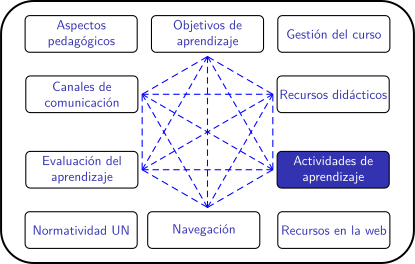

Cursos en la UN para el periodo 2020-02
Foros de discusión
¿Qué son los foros de discusión?
Son espacios en la web para intercambiar ideas u opiniones alrededor de temas específicos. Muchos foros son completamente abiertos (como por ejemplo este sobre el uso de eXeLearning la herramienta libre con la que hemos construido el material de este curso), pero cuando se usan como actividad pedagógica en una asignatura su acceso suele estar restringido a los docentes y estudiantes inscritos.
En su forma más usual, un foro se organiza a través de "temas" (o "preguntas"). Los participantes escriben sus opiniones o respuestas sobre ese tema, y sobre las opiniones previas. Es usual que una tema de debate esté abierto durante mucho tiempo, para que los participantes puedan dar sus opiniones cuando accedan al foro. Por esta razón es un tipo de actividad asincrónica.
Algunas de las decisiones que deben tomarse en la creación de un foro son las siguientes:
- ¿quién o quiénes pueden crear nuevos temas de debate?
- ¿cuáles son las normas de comportamiento que deben establecerse?
- ¿el debate tendrá algún moderador que pueda eliminar respuestas que infrinjan las normas de comportamiento?
Potencial pedagógico
Los foros pueden emplearse para promover varios tipos de aprendizaje. A manera de ejemplo:
- La aplicación de conceptos específicos, asociados a los temas de debate son una buena vía para profundizar en ellos y para asociarlos con otros conocimientos. En este sentido, al usar un concepto com parte de una argumentación se construyen aprendizajes significativos.
- Un debate bien moderado tiene la posibilidad de mejorar la capacidad de argumentación de quienes participan en él, y de inculcar el respeto a la opinión contraria.
- Los foros son espacios de comunicación escrita y como tales también pueden emplearse para mejorar las competencias en este campo.
¿Cómo se evalúa esta actividad?
Depende, por supuesto, de los objetivos de aprendizaje que se deseen trabajar con ella.
En términos generales pueden emplearse criterios tales como:
- Uso de argumentos basados en evidencias.
- Uso o no de falacias argumentativas.
- Aspectos de redacción de las opiniones o respuestas.
- Creatividad de soluciones propuestas
- Dominio de los conceptos empleados en la argumentación.
A partir de esos criterios, los docentes y los estudiantes pueden emplear los espacios de comentarios para ayudar a mejorar la calidad de los debates (realimentación).
Por otra parte, el foro puede tener por propósito encontrar una solución colectiva a un problema específico. Si este es el caso, es posible también evaluar el producto (a solución) obtenida colectivamente.
Ejemplos de aplicación
Casos (ficticios o no)
¿Cómo los creo?
En moodle:
Puede encontrar las instrucciones es este enlace o revisar el video del canal de moodle en youtube :
En correo electrónico:
Si la conectividad es un problema, puede iniciar una pregunta de debate a través de un correo electrónico a todos los estudiantes, pidiéndoles que participen contestando el correo a todos. Este método puede hacer que la discusión sea difícil de seguir, y solo debería usarse si no hay otos canales (como profesores de la UN nos consta que algunos debates por esta vía pueden volverse caóticos).
Por WhatsApp:
Puede crear un grupo de WhatsApp con sus estudiantes. Se sugiere tener un grupo por cada pregunta para poder hacer un buen seguimiento a la argumentación. Las reglas de uso deben ser claras. Por ejemplo ¿los participantes estpan dispuestos a compartir sus números de celular? ¿y estarían dispuestos a recibir llamadas o mensajes por fuera de este grupo?
Por Facebook:
Pueden crearse grupos cerrados en esta plataforma y generar debates usando los comentarios a las publicaciones. La privacidad puede manejarse limitando el acceso a los comentarios solo a los miembros del grupo. No obstante, usar este canal implica forzar que todos los participantes tengan una cuenta en esta plataforma, y quizás no todos estén de acuerdo. Tenga presente que, al fin de cuentas, esta no es una plataforma sobre la que tengamos control de su gestión.
Por Edmodo:
Edmodo es una plataforma que se define a sí misma como un red social para la educación. Es una espacio web de acceso gratuito que funciona con la lógica de una red social, en la que se pueden crear espacios cerrados a los que solo puedan acceder los alumnos y docentes que se indiquen. En esos espacios es posible crear debates alrededor de temas o preguntas.
¿Dónde puedo aprender más?
- Isabel Buil, Blanca Hernández, F. Javier Sesé & Pilar Urquizu Los foros de discusión y sus beneficios en la docencia virtual: recomendaciones para un uso eficiente Innovar, Volumen 22, Número 43, 2012. ISSN electrónico 2248-6968. ISSN impreso 0121-5051.
- David Ornelas, El uso del Foro de Discusión Virtual en la enseñanza Revista Iberoamericana de Educación ISSN: 1681-5653 N. 44/4 – 10 de noviembre de 2007
- Enric Gil Garcia, Montse Guitert Catasús, Teresa Romeu Fontanillas, Orientaciones sobre los debates virtuales . Universitat Oberta de Catalunya.
Reflexión
¿Cuáles de los objetivos de aprendizaje de tus asignaturas podrían promoverse mediante el uso de foros?
Obra publicada con Licencia Creative Commons Reconocimiento Compartir igual 4.0